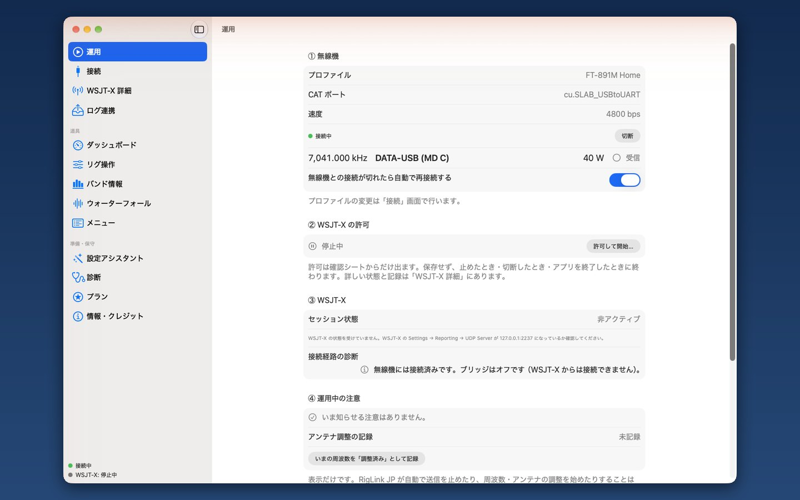
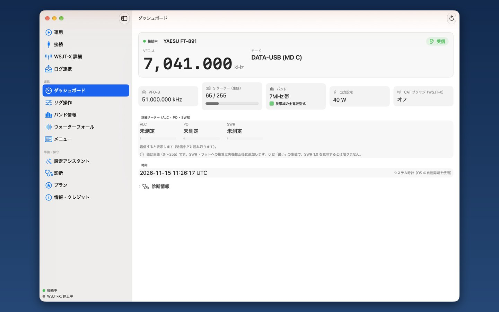
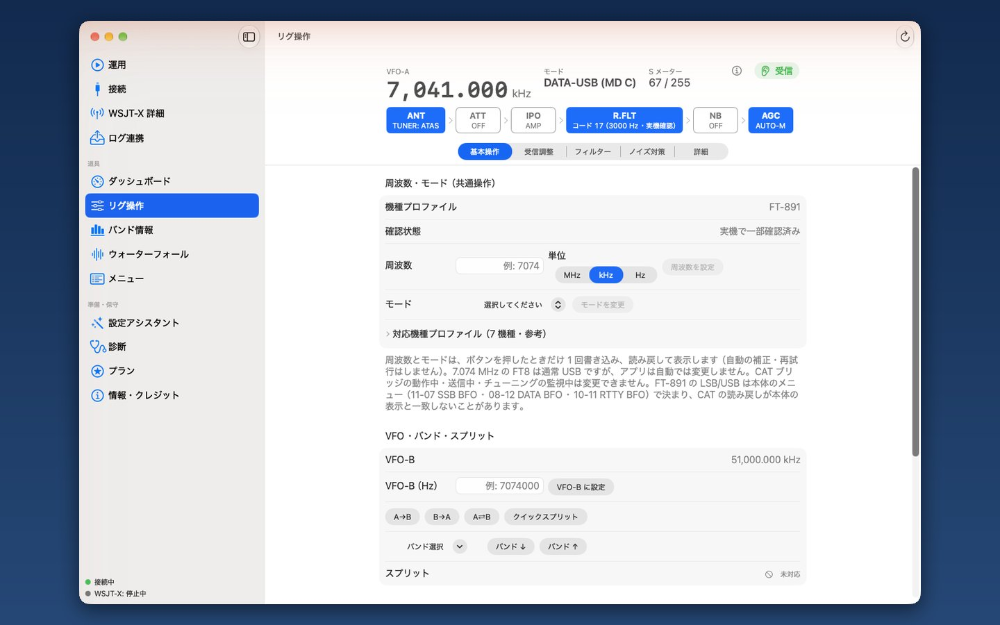
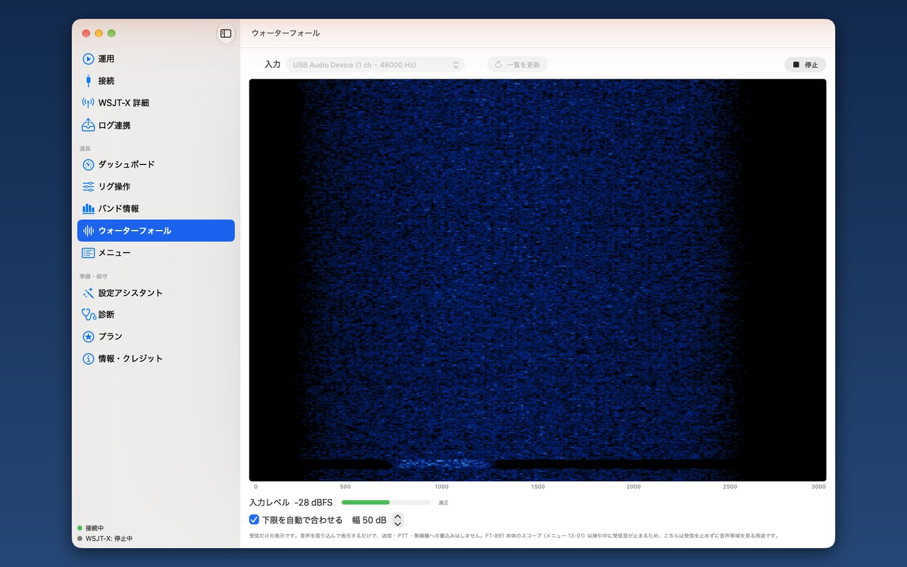
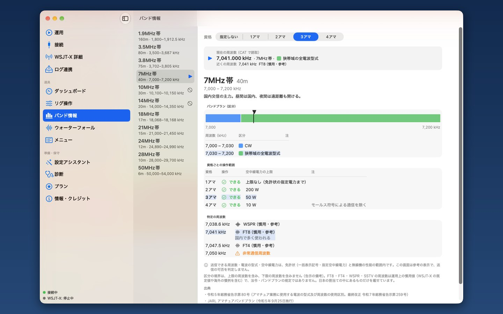
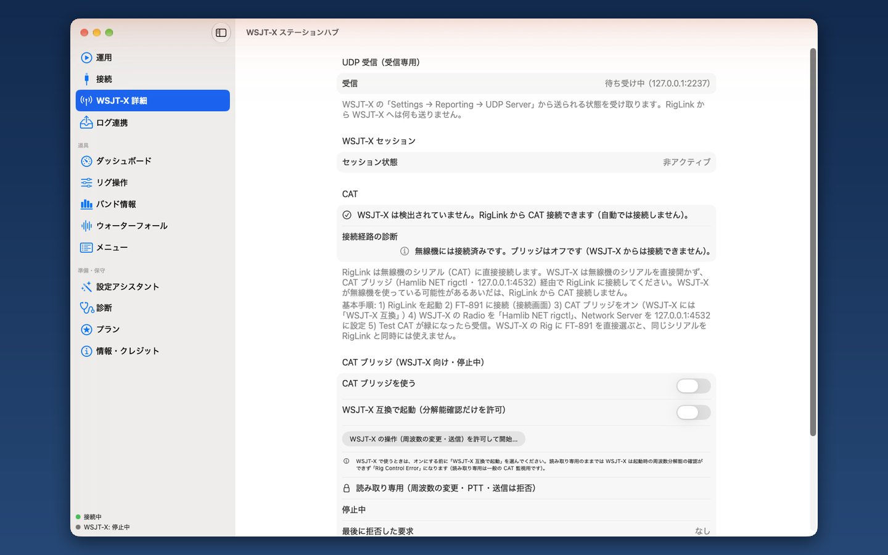

RigLink JP
必要なもの
- macOS 14 以降の Mac
- YAESU FT-891 / FT-891M(本体の USB 端子を Mac につなぎます)
- Silicon Labs の CP210x VCP ドライバー(無料。Silicon Labs の配布ページから macOS 用を入れます)。FT-891 の USB(CP2105)を Mac で使うために必要です。macOS に標準で入っているドライバーでは、FT-891 の CAT と通信できません(開発者の環境で確認)。入れたあと、「システム設定」でドライバーの許可を求められたら許可してください。
- 受信音声・送信音声のインターフェース Digirig DR-891(類似品・自作のインターフェースはサポート外です)。音声は macOS の標準の機能で「USB Audio Device」として認識され、追加のドライバーは要りません。
- FT8 などで運用するときは WSJT-X(別途入手。任意)
- アマチュア無線の無線局免許。送信は免許の範囲(周波数・出力・電波の型式)で行ってください。
はじめかた
- FT-891 の USB 端子を Mac につなぎ、無線機の電源を入れます。
- RigLink JP の「接続」でポートを選んで接続します。CAT の速度は自動で確かめます(
ID;を送るだけで、設定は変えません)。 - 「運用」で周波数・モード・送受信の状態を確かめます。
- WSJT-X と一緒に使うときは、WSJT-X の無線機の設定を「Hamlib NET rigctl」・
127.0.0.1:4532にして、RigLink JP の「運用」から「許可して開始…」を押します。送信を許可する範囲(バンド・回数・時間)は確認画面で選びます。
WSJT-X の設定(参考)
開発者の環境(WSJT-X 3.0.2・FT-891M・Digirig DR-891)で動作を確かめた設定です。WSJT-X の画面の名前は英語のまま書いています。
Settings › Radio
- Rig:
Hamlib NET rigctl - Network Server:
127.0.0.1:4532 - PTT Method:
CAT - Transmit Audio Source:
Rear/Data(Front/Mic にすると、RigLink JP は送信の要求を断ります) - Mode:
None(Data/Pkt にすると WSJT-X がモードを変えようとし、RigLink JP はそれを断ります。モードは無線機か RigLink JP で DATA-USB にしておきます) - Split Operation:
None
Settings › Audio
- Input:
USB Audio Device(Digirig DR-891) - Output:
USB Audio Device・Left(DR-891 の右チャンネルは VOX 回路につながっていて、音が出ると送信に切り替わります。CAT 以外の経路で送信しないよう Left にします)
Settings › Reporting
- UDP Server:
127.0.0.1、UDP Server port number:2237(RigLink JP が WSJT-X の状態と交信の記録を受け取ります)
使う順番は、RigLink JP で無線機に接続 →「運用」の「許可して開始…」→ WSJT-X の順です。WSJT-X に「Rig Control Error」が出たときは、RigLink JP 側を開始してから Retry を押してください(Cancel を押すと WSJT-X が終了します)。
無線機側は、モードを DATA-USB にします。送信の音量(FT-891 のメニュー 16-14 DATA GAIN と WSJT-X の Pwr)は、ALC が振れすぎない範囲に合わせてください(開発者の環境では DATA GAIN 15・出力 5 W で ALC がゾーン内でした。環境で変わります)。
画面
バージョン 1.0 の画面です(YAESU FT-891M に接続し、受信だけで撮影)。






送信の安全について
- RigLink JP は、利用者が許可した間だけ WSJT-X からの送信を通します。許可は保存せず、ブリッジを止める・切断する・アプリを終了すると終わります。
- 送信の停止・許可の取り消し・切断は、どのプランでもいつでも使えます。
プラン(自動更新の購読)
- 無料: 接続・ダッシュボード・診断・バンド情報・設定アシスタント・メニューの読み出し・周波数とメーターの表示
- ライト(月額 ¥400 / 年額 ¥4,000): リグ操作・指定範囲スキャン・ウォーターフォール・HamLogJP へのログ転送・運用ログの読み込み・メニュー CSV の読み込み
- プロ(月額 ¥700 / 年額 ¥7,000): ライトの全部と WSJT-X 連携・フィルター既定値の復元
- 上の金額は日本での価格です。日本以外では、その国・地域の通貨と価格になります(購読の前に App Store の画面に表示されます)。各プランとも最初の 2 週間は無料です(初めての方のみ)。購読は自動で更新されます。更新の 24 時間前までに解約すれば料金はかかりません。解約は「システム設定」→ Apple アカウント →「メディアと購入」→「サブスクリプション」、または App Store のアカウントから行えます。
- 購読が終わっても、運用ログの書き出しは無料で使えます。
- 利用規約: Apple 標準 EULA
よくある質問
ポートが見つかりません。
USB ケーブルと無線機の電源を確かめてください。Silicon Labs の CP210x VCP ドライバーが入っているかも確かめてください(入っていると、ポートの名前が「SLAB_USBtoUART」で始まります)。FT-891 の USB には 2 つのポートがあり、CAT は Enhanced COM(インターフェース 0)側です。「診断」でポートの一覧と IF 番号を確かめられます。
WSJT-X を先に起動すると接続できません。
同じ無線機を WSJT-X と RigLink JP が同時に直接操作しないよう、WSJT-X を検出している間は接続を止めています。WSJT-X が CAT ブリッジ経由の設定になっていることを確かめたうえで、「WSJT-X は CAT ブリッジ経由の設定です。接続する…」を押してください。
交信を HamLogJP に送るには?
「ログ連携」の「HamLogJP へ送る」を押します(ライト以上)。HamLogJP 側の設定で「RigLink JP から自動で取り込む」をオンにしてください。
お問い合わせ
genre_pincers_3d@icloud.com(コールサイン・Mac と macOS の版・RigLink JP の版・起きたことをお書きください)
Requirements
- A Mac with macOS 14 or later
- YAESU FT-891 / FT-891M (connect the radio's USB port to the Mac)
- Silicon Labs CP210x VCP driver (free; install the macOS version from the Silicon Labs download page). It is required to use the FT-891 USB port (CP2105) on a Mac. The driver built into macOS could not communicate with the FT-891 CAT port in the developer's tests. If System Settings asks you to allow the driver after installation, allow it.
- Digirig DR-891 audio interface (similar or home-made interfaces are not supported). Its audio appears as “USB Audio Device” using the standard macOS support; no extra driver is needed.
- WSJT-X for FT8 and similar modes (optional, obtained separately)
- An amateur radio station licence. Transmit only within your licence.
Getting started
- Connect the FT-891 USB port to the Mac and turn the radio on.
- In Connection, choose the port and connect.
- Check frequency, mode and TX/RX state in Operation.
- To use WSJT-X, set its radio to “Hamlib NET rigctl” at
127.0.0.1:4532, then press “Permit and start…” in Operation and choose what to allow.
WSJT-X settings (reference)
These are the settings verified in the developer's setup (WSJT-X 3.0.2, FT-891M, Digirig DR-891).
Settings › Radio
- Rig:
Hamlib NET rigctl - Network Server:
127.0.0.1:4532 - PTT Method:
CAT - Transmit Audio Source:
Rear/Data(with Front/Mic, RigLink JP refuses the transmit request) - Mode:
None(with Data/Pkt, WSJT-X tries to change the mode and RigLink JP refuses it; set the radio to DATA-USB on the radio or in RigLink JP) - Split Operation:
None
Settings › Audio
- Input:
USB Audio Device(Digirig DR-891) - Output:
USB Audio Device,Left(the right channel of the DR-891 feeds its VOX circuit and would key the radio; use Left so that only CAT keys it)
Settings › Reporting
- UDP Server:
127.0.0.1, UDP Server port number:2237(RigLink JP receives the WSJT-X status and logged QSOs)
Start in this order: connect to the radio in RigLink JP, press “Permit and start…” in Operation, then use WSJT-X. If WSJT-X shows “Rig Control Error”, start the RigLink JP side and press Retry (Cancel quits WSJT-X).
Set the radio to DATA-USB. Adjust the transmit audio (FT-891 menu 16-14 DATA GAIN and the WSJT-X Pwr slider) so that ALC stays in its zone (in the developer's setup, DATA GAIN 15 at 5 W; this varies).
Screens
Screens from version 1.0, connected to a Yaesu FT-891M in receive only. Version 1.0 is shown in Japanese; English display is planned for the next update.
Plans (auto-renewable subscriptions)
- Free: connection, dashboard, diagnostics, band info, setup assistant, menu reading, frequency and meter display
- Lite (US$1.99/month or US$24.99/year in the United States; ¥400/month or ¥4,000/year in Japan): rig control, range scan, waterfall, log transfer to HamLogJP, operating log import, menu CSV import
- Pro (US$3.99/month or US$39.99/year in the United States; ¥700/month or ¥7,000/year in Japan): everything in Lite plus WSJT-X integration and filter default restore
- Prices are charged in your local currency and vary by country or region. The App Store shows the price for your region before you subscribe.
- Each plan starts with a 2-week free trial for new subscribers. Subscriptions renew automatically unless cancelled at least 24 hours before renewal. Manage or cancel in your Apple Account subscriptions.
- Terms of Use: Apple standard EULA
Contact
genre_pincers_3d@icloud.com